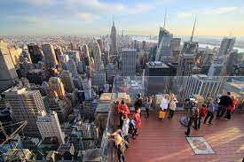

Click on the images to visit each attraction site
Explore
See why these attractions are the city's most popular and favorite spots and get your picture perfect moment in NYC. Don't forget to share your moment with us on our social media pages.
Learn
These spots in New York City are a must visit when you come. If you're someone who loves to travel and explore new places with deep rooted history, the places listed above are just the right pick for you.